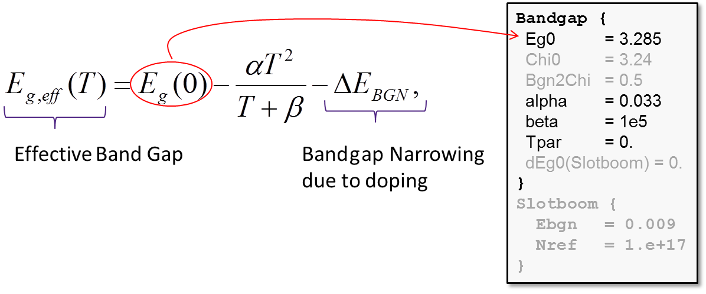
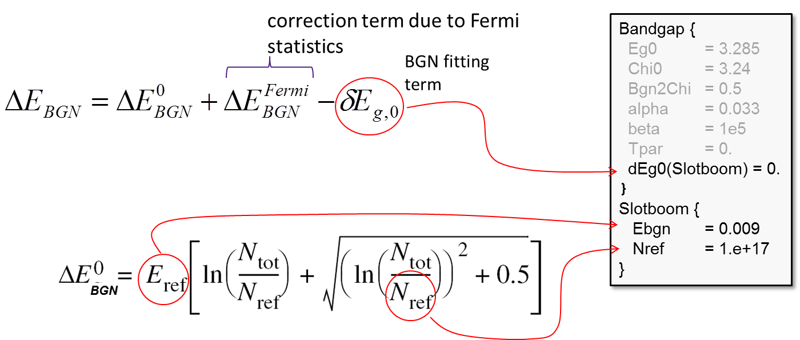
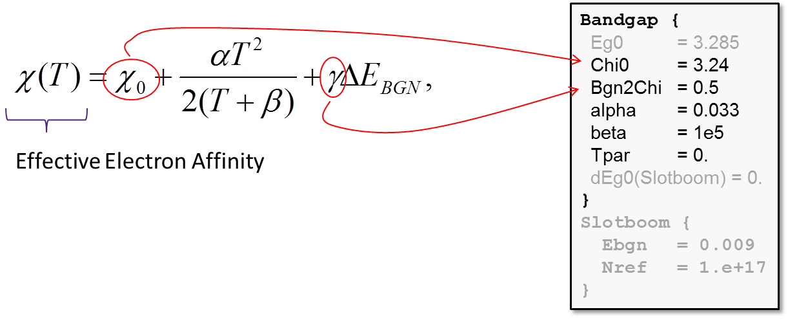

Sentaurus Device
15. Special Focus: 4H-SiC PiN Device Breakdown Simulation
15.1 Overview
15.2 SiC Parameter Files
15.3 SiC-Specific Physical Models
15.4 SiC-Specific Numeric Parameters
15.5 Application Example: SiC PiN Diode Breakdown
Objectives
- To demonstrate how to perform a 4H-SiC PiN device breakdown simulation in Sentaurus Device.
15.1 Overview
This example follows the description of the project process part in Section 15. Special Focus: SiC Process Simulation and provides more insight into how to perform a SiC device simulation in conjunction with the SiC process simulation.
The complete project can be accessed from Sentaurus Workbench in the directory Applications_Library/GettingStarted/sdevice/4H-SiC_PiN.
The concept of the simulated device in this project and its geometry follows the publication of R. Pérez et al., "Planar Edge Termination Design and Technology Considerations for 1.7-kV 4H-SiC PiN Diodes," IEEE Transactions on Electron Devices, vol. 52, no. 10, pp. 2309–2316, 2005.
15.2 SiC Parameter Files
The dedicated parameter files for 4H-SiC and 6H-SiC polytypes are provided in the $STROOT/tcad/$STRELEASE/lib/sdevice/MaterialDB/ repository. Sentaurus Workbench provides an easy way to access these files. See Section 7.2 Customizing Tool Input File.
In this example, the 4HSiC.par file from the MaterialDB is used directly.
15.3 SiC-Specific Physical Models
Several physical models, which are relevant to SiC technology, must be used in the case of SiC device simulations, including:
- Band gap model, including bandgap narrowing
- Dopant incomplete ionization
- Parameter anisotropy due to hexagonal crystal structure
15.3.1 Band Gap Model
The standard band gap model is used in SiC device simulations, which includes:
- Bandgap dependency on lattice temperature
- Bandgap narrowing due to high doping and carrier statistics
- Electron affinity dependency on the lattice temperature and bandgap narrowing
The model for bandgap dependency on the lattice temperature uses parameters from the material parameter file, which were extracted from the literature:

The bandgap narrowing (BGN) term ΔEBGN consists of three contributions. The first and second ones are determined by the model selection in the command file input:
Physics { ...
Fermi
EffectiveIntrinsicDensity(Slotboom noFermi)
}
The value for the third contribution is entered directly in the corresponding parameter file section:

The model parameters to compute the electron affinity dependency on the lattice temperature and the BGN are provided in the Bandgap section of the material parameter file:

The value of the parameter γ in the above formula determines how ΔEBGN splits between the conduction and valence bands (see Figure 1).
{kind=link}
Figure 1. Schematic representation of the ΔEBGN split between the conduction and valence bands. (Click image for full-size view.)
15.3.2 Dopant Incomplete Ionization
The typical dopants used in SiC technology are shown in Table 1.
| Donors | Acceptors |
|---|---|
| Nitrogen (N) | Aluminum (Al) |
| Phosphorus (P) | Boron (B) |
| Arsenic (As) | Gallium (Ga) |
By default, Sentaurus Device assumes that all active dopants, either coming from a Sentaurus Process simulation or specified in Sentaurus Structure Editor, are fully ionized. In SiC materials, for both donors and acceptors, their energy levels can be deeply positioned inside the band gap. This requires an ionized doping density computation for each individual dopant.
Both 4H-SiC and 6H-SiC lattices are formed by a corresponding number of cubic and hexagonal bonds with a stacking sequences of ABCB (4H-SiC) or ABCACB (6H-SiC), as shown in Figure 2.
{kind=link}
Figure 2. Layer structure of SiC (towards [0001] direction) with (left) tetrahedrally bonded carbon atoms linked to three Si atoms within the bilayer and (right) shown together with the stacking sequences for 4H-SiC and 6H-SiC polytypes. (Click image for full-size view.)
In such a stacking sequence, all A sites are hexagonal ("h") sites, and all B and C sites are cubic ("k") sites. For some dopants such as nitrogen or phosphorus, their ionization energy depends on which site ("k" or "h") a dopant prefers to occupy. Table 2 lists the typical ionization energies for different dopants in 4H-SiC and 6H-SiC polytypes.
| Polytype | Al | B | N in "h" sites | N in "k1" sites | N in "k2" sites | P in "h" sites | P in "k1" sites |
|---|---|---|---|---|---|---|---|
| 4H-SiC | 220 ± 20 meV | 330 ± 30 meV | 70.9 meV | 123.7 meV | – | 50 ± 5 meV | 100 ± 10 meV |
| 6H-SiC | 220 ± 20 meV | 330 ± 30 meV | 80 ± 5 meV | 140 ± 5 meV | 145 ± 5 meV | 100 ± 10 meV | 155 ± 5 meV |
The dopant incomplete ionization model in Sentaurus Device takes into consideration the following phenomena:
- Impurity level degeneration
- Activation energy doping dependency
- Multiple lattice site occupation
- Time-delay transient effects
The model is activated in the global Physics section of the command file as shown here:
Physics {
IncompleteIonization[(Dopants = "AluminumActive")]
}
The optional Dopants parameter allows you to specify particular dopants for which the incomplete ionization will be activated. Otherwise, the model is applied to all dopants.
The corresponding model parameters can be found in the material parameter file under the Ionization section:
Species ("AluminumConcentration") {
#4H-SiC Al
E_0 = 0.265 #4H-SiC [09Koi]
alpha = 3.60e-08 #4H-SiC [09Koi]
g = 4.0
Xsec = 1.0000e-12
}
To activate the incomplete ionization model for those dopants that occupy multiple sites, you must use the Split statement. It allows you to take into account different ionization energies for dopants that occupy both cubic and hexagonal lattice sites.
The following specification demonstrates the Split option activation for nitrogen dopants:
Physics {
IncompleteIonization (
Split (
Doping = "NitrogenConcentration"
Weights = (0.5 0.5)
)
)
}
Here:
- The Split statement activates the model.
- The Doping keyword specifies the species name for which the Split statement must be applied.
- The Weights keyword defines the probabilities of the dopant occupying different lattice sites. The sum of weights must be one.
When activated, the dopant profile split is performed internally without user interaction, such that the sum of split profiles equals the original profile distribution. The split dopants are recognized by their names, for example:
NitrogenConcentration_split1 NitrogenActiveConcentration_split1 NitrogenPlusConcentration_split1 NitrogenConcentration_split2 NitrogenActiveConcentration_split2 NitrogenPlusConcentration_split2
Here, NitrogenConcentration_split1 indicates the split amount of the total nitrogen doping, which occupies "h" lattice sites, NitrogenActiveConcentration_split1 corresponds to the active (substitutional) part of the total doping, and NitrogenPlusConcentration_split1 represents the part of the doping that is fully ionized. Correspondingly, the *_split2 suffix corresponds to the dopant species that occupies "k" lattice sites. The above names can be used inside the Plot command for visualization with Sentaurus Visual.
The model parameters for the split dopants are entered in the same way as for other dopants in the Ionization section of the parameter file:
Species ("NitrogenConcentration_split1") {
#4H-SiC Nitrogen hexagonal site
E_0 = 0.0709 #4H-SiC h [04Kag]
alpha = 3.3800e-08 #4H-SiC h [04Kag]
g = 2.0 #4H-SiC h
Xsec = 1.0000e-12 #4H-SiC h
}
Species ("NitrogenConcentration_split2") {
#4H-SiC Nitrogen cubic site
E_0 = 0.1237 #4H-SiC k [04Kag]
alpha = 4.6500e-08 #4H-SiC k [04Kag]
g = 2.0 #4H-SiC k
Xsec = 1.0000e-12 #4H-SiC k
}
15.3.3 Material Parameter Anisotropy
Another important phenomenon for SiC materials is the crystal anisotropy, caused by the layer-stacking sequence.
This results in anisotropy of carrier transport parameters, where the most important are:
- Carrier mobility
- Impact ionization coefficients
- Electrical permittivity
- Thermal conductivity
- Carrier quantization
In the case of material anisotropy, the default numeric approximation for the carrier transport equations is no longer valid because the transport coefficients, such as the carrier mobility, become tensor quantities.
Different approximations are available in Sentaurus Device to address the problems caused by numeric discretization of the anisotropic terms in carrier transport equations.
| Method | Description | Syntax |
|---|---|---|
| AverageAniso | Used by default for both anisotropic and stress simulations. Requires full Delaunay mesh. Suitable if main axis of anisotropy is aligned to the simulation axis. | Math { AverageAniso } |
| TensorGridAniso | Correct approximation for tensor and near-tensor grids only. Ignores off-diagonal elements of tensor matrix. It handles both anisotropic and stress-related problems. Due to its simplicity, it might run faster than the default method. | Math { TensorGridAniso TensorGridAniso(Piezo) TensorGridAniso(Aniso) TensorGridAniso(Aniso Piezo) } |
| AnisoSG | No dependency on mesh orientation. Applies generalized Scharfetter–Gummel approximation to anisotropic tasks. It might be numerically less stable than AverageAniso or TensorGridAniso. | Math { AnisoSG } |
| StressSG | No dependency on mesh orientation. Applies generalized Scharfetter–Gummel approximation to stress tasks. It might be numerically less stable than AverageAniso or TensorGridAniso. | Math { StressSG } |
The anisotropic model parameters are entered in the material parameter file under the section name <model>_aniso. For example, mobility values that correspond to the direction of anisotropy in 4H-SiC material (<0001> axis direction) are specified inside the ConstantMobility_aniso section. On the other hand, parameters relevant to the orthogonal direction of the anisotropy axis (<1120>) are specified inside the ConstantMobility section:
ConstantMobility {
mumax = 950.0, 125. #[04Aya]
Exponent =2.4, 2.15 #[04Aya]
}
ConstantMobility_aniso {
mumax = 1140.0, 125 #[04Aya], for electrons mu//=mu_perp/0.83 [94Sch1]
Exponent = 2.4, 2.15 #[04Aya]
}
To switch on a specific anisotropic model, specify the corresponding keyword in the Aniso subsection of the global Physics section:
Physics {...
Aniso (
Mobility
Poisson
Avalanche
direction(SimulationSystem)= (1 0 0)
)
}
In the case of the Hatakeyama avalanche model, activation of model anisotropy in the Aniso subsection is not required because the model is implicitly anisotropic.
The direction keyword indicates the anisotropic axis direction, for which the corresponding parameter values from the *_aniso sections in the parameter file will be used. The symbolic direction definition is also possible, for example, direction(SimulationSystem)= xAxis. The SimulationSystem option indicates that the anisotropic direction is given in simulation system coordinates. In this example, the substrate miscut is taken into account while specifying the direction of anisotropy.
The difference in breakdown voltage can be expected between the Hatakeyama and Okuto avalanche model results, because they use different model parameter values for the direction of crystal anisotropy.
15.4 SiC-Specific Numeric Parameters
SiC device simulations typically require a much higher numeric accuracy to resolve very-low intrinsic carrier densities, caused by the wide bandgap of the material. For this purpose, it is advisable to run SiC device simulations in the ExtendedPrecision mode and to tighten the corresponding computation error controls.
The proposed numeric parameter set for SiC device simulation is:
Math {
Extrapolate * Always good for Quasistationary simulations,
* should be used with care in Transient
Iterations=15 * Default is 50
ExtendedPrecision(80) * Floating-point operations with 80 bits on Linux
NotDamped=20 * Avoids solution correction damping
RHSMin=1e-15 * RHS often below default 1e-5 with ExtendedPrecision
ErrRef(electron)=1E-2 * Tightened computation error controls help
ErrRef(hole) = 1E-2 * simulator to converge better
Method=Super|ILS(set=25) * Linear solver selection, choose either Super or ILS
ILSrc= "set (25) {
iterative(gmres(100), tolrel=1e-10, tolunprec=1e-4, tolabs=0, maxit=200);
preconditioning(ilut(1.5e-6,-1), right);
ordering(symmetric=nd, nonsymmetric=mpsilst);
options(compact=yes, linscale=0, refineresidual=10, verbose=0);
};"
Transient=BE * Switches on backward Euler transient scheme
TensorGridAniso(aniso) * Fast and efficient Aniso approximation
RefDens_eGradQuasiFermi_ElectricField_HFS= 1e12
RefDens_hGradQuasiFermi_ElectricField_HFS= 1e12
}
Table 4 shows the attainable numeric accuracy, which is relevant to the ExtendedPrecision arithmetic, specified by ExtendedPrecision(<EP>) in the Math section.
| Math command | Size | Accuracy |
|---|---|---|
| -ExtendedPrecision | 64 bits (default) | 2.22x10-16 |
| ExtendedPrecision ExtendedPrecision(80) |
80 bits (Intel/Linux) | 1.08x10-19 |
| ExtendedPrecision(128) | 128 bits | 4.93x10-32 |
| ExtendedPrecision(256) | 256 bits | 1.22x10-63 |
The TensorGridAniso(Aniso) approximation is suggested when the physical parameter anisotropy (mobility, permittivity, and so on) of the device is taken into consideration.
Transient=BE activates the backward Euler transient method instead of the default TRBDF2 method, which makes simulations run faster.
Use Method=Super or Method=ILS(set=5) with the dedicated solver parameter set, which works more reliably in the case of wide-bandgap device simulations. The SUPER solver is good for small- or medium-sized 2D tasks. The ILS solver is more suitable for large 2D or 3D tasks.
A wide-bandgap material requires higher computational accuracy than common silicon device simulations. This is achieved by tightening the reference error control criteria ErrRef(electron)=1E-2 and ErrRef(hole)=1E-2.
For the Newton solver, typically, you should limit the number of nonlinear iterations to a small enough value, such as Iterations=15, and also avoid solution damping by specifying the number of nondamped iterations to be higher than the number of allowed Newton iterations (NotDamped=20).
Use RHSMin=1e-15 to ensure the Newton solver exits as soon as an integral relative error criterion for the solution quantities is achieved.
For device simulations that use the velocity high-field saturation model, to avoid convergence instablities within regions with small densities, driving force smoothing between the default driving force (GradQuasiFermi) and the electric field is suggested. The carrier density, used within the smoothing procedure, is chosen according to a given RefDens_e(h)GradQuasiFermi_ElectricField_HFS value, provided in the Math section.
15.5 Application Example: SiC PiN Diode Breakdown
This example demonstrates the simulation of the breakdown of a SiC PiN diode.
15.5.1 Project Configuration
The simulations are organized as a Sentaurus Workbench project (see Figure 3).
{kind=link}
Figure 3. Organization of SiC PiN diode project in Sentaurus Workbench. (Click image for full-size view.)
The project consists of Sentaurus Process and Sentaurus Device. The description of the process simulation part is provided in the Sentaurus Process module, Section 15. Special Focus: SiC Process Simulation.
This section focuses on the device simulation part.
15.5.2 Mesh Construction for Device Simulation
Requirements for mesh construction for process and device simulations are different. For device simulations, the mesh must be refined within the areas of spatial nonuniformities, such as large net doping profile gradients, material interfaces, and regions within the device where some solution variables might experience large perturbations (areas with a strong electric field and large carrier impact ionization).
In this project, mesh generation for the device simulation is performed within Sentaurus Process as the last step of the process flow.
The mesh steps for the global domain discretization (stepx and stepy) are computed according to the general rule implemented in the quadtree recursive space decomposition algorithm, which is described in the Sentaurus Mesh module, Section 2. Axis-Aligned Mesh Refinement:
set sx @<epithick+5>@ set sy @width@ set stepx [expr min(2, $sx/pow(2, 4))] set stepy [expr min(6, $sy/pow(2, 4))]
Two dedicated refinement boxes are defined:
- active_box covers the active device domain, which includes the entire p-n junction and also extends slightly away towards the device periphery.
- corner_box is confined around the mask corner and covers the lateral part of the p-n junction, which is assumed to be a region of the strongest carrier impact ionization (see Figure 4).
#-- refinement boxes
#if @Overlap@
refinebox name= corner_box SiliconCarbide min= {-1 @<awidth+LJTE2-5.>@} \
max= {@epithick@ @<awidth+LJTE2+10.>@} \
xrefine= [expr $stepx/4] yrefine= [expr $stepy/4]
refinebox name= active_box SiliconCarbide min= {-1 0} \
max= {$sx @<awidth+LJTE2+15.>@} yrefine=[ expr $stepy/2]
#else
refinebox name= corner_box SiliconCarbide min= {-1 @<awidth+LJTE1+LJTE2-25.>@} \
max= {@epithick@ @<awidth+LJTE1+LJTE2+10.>@} \
xrefine= [expr $stepx/4] yrefine= [expr $stepy/4]
refinebox name= active_box SiliconCarbide min= {-1 0} \
max= {$sx @<awidth+LJTE1+LJTE2+15.>@} yrefine=[ expr $stepy/2]
#endif
{kind=link}
Figure 4. Variant of the device structure showing the local refinement box location, which covers the p-n junction corner. (Click image for full-size view.)
Finally, the usual mesh refinements on net doping and at the material and contact interfaces are defined. Afterwards, the device is remeshed:
refinebox name= doping SiliconCarbide Adaptive \
refine.fields= {NetActive} max.asinhdiff= {NetActive= 1.0} \
refine.min.edge= {0.015 0.1} refine.max.edge= {$stepx $stepy}
refinebox interface.mat.pairs= {SiliconCarbide Oxide} \
min.normal.size= 0.001 normal.growth.ratio= 2
refinebox interface.mat.pairs= {SiliconCarbide Aluminum} \
min.normal.size= 0.001 normal.growth.ratio= 2
grid remesh info= 2
Figure 5 shows the constructed mesh for the device simulation, with a part of the structure magnified to demonstrate the accurate interface and junction mesh refinements.
{kind=link}
Figure 5. Mesh constructed for the device simulation showing the interface and junction mesh refinements. The x/y aspect ratio has been changed for viewing convenience. (Click image for full-size view.)
Click to view the primary file sprocess_fps.cmd.
15.5.3 Device Simulation Parameters
Several parameters in Sentaurus Device allow you to have more flexibility when studying the effect of different options:
- EP controls extended-precision arithmetics in the Math section. Suggested values are 80 or 128.
- extra controls the solution extrapolation. If extra=0, solution extrapolation is switched off. If extra=1, linear solution extrapolation will be used. If extra=2, quadratic extrapolation will be applied.
- slae specifies the linear solver to use. If slae=ILS, the iterative linear solver ILS is used with the dedicated solver parameter set. Otherwise, the direct linear solver Super will be activated.
- amodel selects the avalanche model to be used (Hatakeyama or Okuto).
- update specifies whether the Newton solver should check only the relative error criterion is fulfilled (update=0), or both the error and RHSmin criteria are fulfilled (update!=0).
- res sets the external resistor value, connected in series to the cathode electrode.
- aniso switches on (aniso=1) or switches off (aniso=0) the corresponding models and numeric approximation to account for SiC material anisotropy.
This project uses 80-bit extended precision (EP=80), no solution extrapolation, ILS as the linear solver, the Okuto model for the carrier avalanche generation, and the convergence criterion checks only on the solutions error (update=0).
The SiC material parameter anisotropy is taken into consideration (aniso=1).
To account for a 4° wafer miscut angle, the following anisotropic direction is used for the mobility and dielectric permittivity model parameters:
Aniso ( Mobility Poisson direction(SimulationSystem)= (0.998 0.070 0) )
Click to view the primary file BV_des.cmd.
15.5.4 Simulation Results
Figure 6 and Figure 7 show the impact ionization and the current density profile distributions at the breakdown location, obtained for two device constructions – Al implantations distributed over two different implantation openings (Overlap=0) and Al implantations into the same implantation window (Overlap=1).
{kind=link}
Figure 6. Distribution of the total impact ionization rate under breakdown condition for the two device structures under consideration. (Click image for full-size view.)
{kind=link}
Figure 7. Distribution of the total current density and current potential isolines under breakdown condition for the two device structures under consideration. (Click image for full-size view.)
Figure 8 and Figure 9 illustrate the total, active, and incomplete ionized Al and N doping profiles, taken along the cross section, indicated by the dashed line on the 2D plot.
{kind=link}
Figure 8. Total, active, and incomplete ionized Al profiles along the cutline, indicated by dashed line in the 2D plot (top). (Click image for full-size view.)
{kind=link}
Figure 9. Distributions of the N total, active, and incomplete ionized profiles along the cutline, indicated by dashed line in the 2D plot (top). The ionized profiles show how the N dopant is split between hexagonal ("h") and cubic ("k") lattice sites. (Click image for full-size view.)
Figure 10 shows the corresponding device I–V characteristics, obtained for two different device constructions.
{kind=link}
Figure 10. I–V characteristics obtained for different device constructions. (Click image for full-size view.)
Copyright © 2022 Synopsys, Inc. All rights reserved.